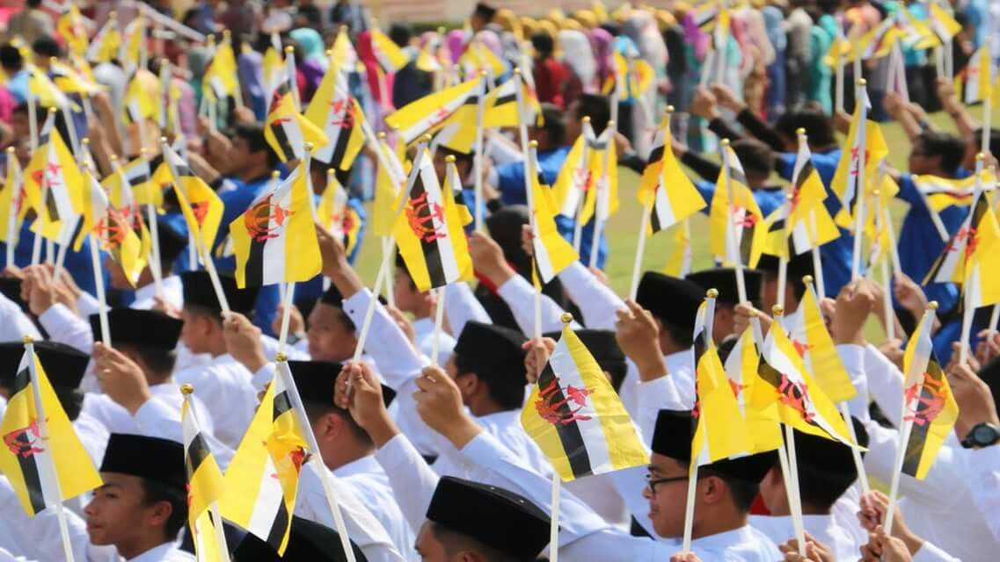

National Day
When: 23 February.
Where: Taman Haji Sir Muda Omar 'Ali Saifuddien in Bandar Seri Begawan.
What happens: the nation's birthday, with a big parade, flag waving, colourful displays and fireworks.
Tip: arrive early to find a good spot, and bring water and a hat.